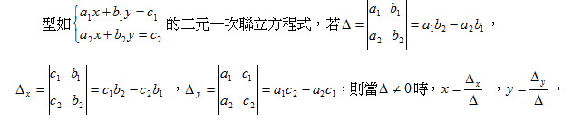
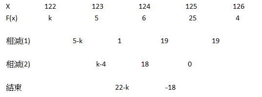

設 f(x) 為二次多項式，若 f(1) = 2，f(2) = 7，f(-1) = 4，則 f(3) = ?
以上問題中，題目給定三個已知的函數值，求一個未知的函數值。如果你有確切的函數，求函數值非常簡單，直接將參數(x)代入計算即可。問題是，題目並沒有告訴我們函數的內容，我們該如何處理呢?
將三個函數值代入後可達一組三元一次聯立方程式
f(1) = 2 代入 => a + b + c = 2
f(2) = 7 代入 => 4a + 2b + c = 7
f(-1) = 4 代入 => a - b + c = 4
可利用國中的加減消去法或代入消去法處理，但若要求標準化的公式，可利用克拉瑪法則(Cramer's rule)處理。
克拉瑪法則能用公式處理n元一次聯立方程式，並求出所有解。這裡介紹二元一次方程式的解法，讀者記憶後便可快速求解。至於三元的克拉瑪公式因為稍微複雜一些，所以在此略過不提。
將f(x)依照題目提供之函數值假設為
f(x) = a ( x - 1) ( x - 2 ) + b ( x - 1) + c ，其中 a,b,c未知
接下來代入 x = 1，這會造成前面三項相乘為0，使我們求得 c = 2。接著依次代入 x = 2, x = -1，直到求出 a = 2，c = 5 為止，這時代入 x = 3 即可求出解為 16。
故若利用拉格朗日插值法求解，只需將題目給定的條件代入即可。
巴貝奇定理以差分(階插)的概念為主，簡單來說，就是將多項式值排好後，相減得到第一組差，再互相相減得到第二組差，直到剩下兩個相等的差為止。
由於上述題目給定的函數值並為成等差數列，不符合條件，故以下為另一個題目。
設 f(x) 為一三次多項式，若f(123) = 5，f(124) = 6，f(125) = 25，f(126) = 44，則f(122) = ?
令f(122) = k，將函數值由小至大排好，加入未知函數值，開始相減
剩下兩個函數值即可停止，這時， 22-k = -18，故所求 k 為 40。